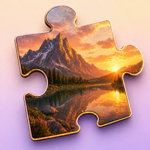

SnapPuzz は、撮った写真やライブラリの写真をそのままジグソーパズルにして遊べる iOS アプリです。毎日1問のデイリーパズルは、ホーム画面やロック画面のウィジェットからすぐに確認できます。
40種類のプリセット写真は最初から無料で遊べます。
不具合のご報告・ご要望・ご質問は、下記メールアドレスまでお気軽にご連絡ください。
よくある質問:
SnapPuzz turns photos you take or pick from your library into jigsaw puzzles. A new Daily Puzzle arrives every day, and you can check it at a glance from your Home Screen or Lock Screen widget.
40 preset photos are included free.
For bug reports, feature requests or questions, please email us at the address below.
FAQ: